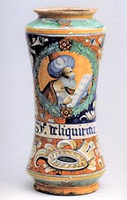

| Book Review | ||
| Fioritura
Influenced by potters from Eastern Spain, maiolica developed in Italy in the 15th century, reaching its zenith (Fioritura) in the 16th century. A tin-white glaze covered a yellow to brown clay and presented a canvas on which to paint cobalt blues, copper greens, iron reds, browns and yellows in different shades. Motifs ranged from family crests to portraits, ornamental designs to flora and fauna, religious motifs and scenes from the legends and myths of antiquity, popular during the period. Soon gold luster was also added to the palette. Many designs were executed on platters, the image following the shape of the rim, with a central design in the middle. Grotesques were another popular motif and in the latter period landscapes became more common. While platters, with their relatively flat surface, offered an ideal canvas for decoration, other forms such as jugs, vases and albarellos (the characteristic Italian ‘waisted’ apothecary jar) were also popular. Different regions specialized in certain motifs. Montelupo, Caffagiolo and Siena concentrated on antique mythology and ornament, in Faenza, urban scenes and pageantry were popular, while in Deruta, beautiful maidens and religious scenes abounded. Other famous areas of maiolica production centered on Gubbio, Castel Durante, Urbino and Pesaro. According
to the authors, Italian maiolica began a slow descent after around
1540. Masterworks were still being made, but became scarcer as time
went on. Centers of activity shifted to Sicily in the middle of
There are not many significant collections of Italian maiolica outside of the country, however the ‘Berlin Collection’ is considered such a one. Whom this private collection actually belongs to is intriguingly never mentioned. There is only talk of a mysterious ‘head of the household’ – obviously a euphemism for a collector of no small means, judging by the value of many of the pieces described in the book. Tjark Hausmann’s Fioritura, which can be translated as ‘heyday’, is not a book written in a narrative style but rather a catalogue of one man’s collection. Each double-spread page depicts and describes in detail a particular work and what is known of its maker. It begins with early Spanish tin-glaze and works its way through Italy’s main maiolica regions. In the course of this survey, we encounter many familiar names: Cipriana Picolpasso, Della Robbia, Guido di Savino, Nicola di Gabriele Sbraga and many other masters, as well as lesser known painters. This oversize volume is replete with high-quality reproductions of magnificent examples of Italian maiolica and is a joy to behold – and read, if you understand German. While the language barrier may be a drawback for some, this publication is nonetheless a must for any serious scholar of Italian maiolica or lover of the genre. G + H Verlag 2002. ISBN 3931768643.
|
||
| © Ceramics Today |
 Within
the rich history of world ceramics, maiolica is a fascinating area
of study. Those who have studied Italian maiolica of the 15th-17th
centuries cannot help but be captivated by the timeless beauty of
the Italian Renaissance masters of painting on tin-white glaze.
Within
the rich history of world ceramics, maiolica is a fascinating area
of study. Those who have studied Italian maiolica of the 15th-17th
centuries cannot help but be captivated by the timeless beauty of
the Italian Renaissance masters of painting on tin-white glaze.